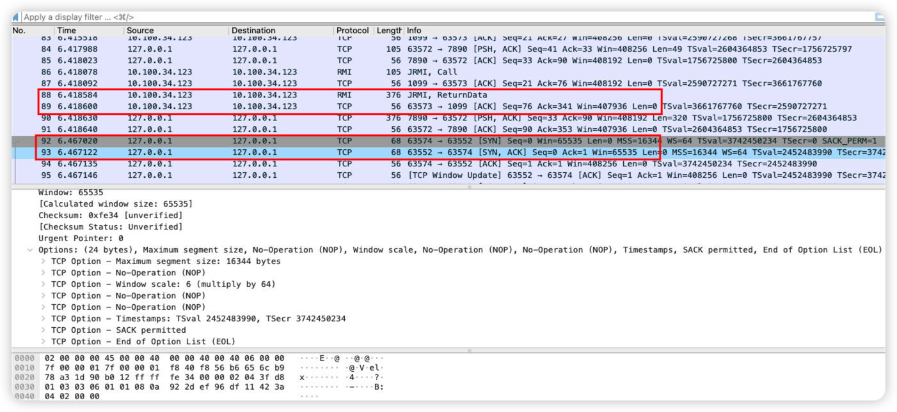

rmi理解
今天看了P牛的rmi讲解，收获颇多。RMI的全称是Remote Method Invocation，远程⽅法调⽤。其实就是让某个Java虚拟机上的对象调⽤另⼀个Java虚拟机中对象上的⽅法。通常对于一个RMI程序需要包含三个部分
rmi registry
,
rmi server
,
rmi client
rmi registry:name service,提供 remote object 注册，name 到 remote object 的绑定和查询，是一种特殊的 remote object.
rmi server 创建 remote object，将其注册到 RMI registry.
rmi client 通过 name 向 RMI registry 获取 remote object reference (stub)，调用其方法.
这里先编写一个server类：
import java.rmi.Naming;
import java.rmi.Remote;
import java.rmi.RemoteException;
import java.rmi.registry.LocateRegistry;
import java.rmi.server.UnicastRemoteObject;
public class RMIserver {
//继承了java.rmi.Remote接口，其中定义我们要远程调用的函数，比如这里的hello()
public interface IRemoteHelloWorld extends Remote{
public String hello() throws RemoteException;
}
//定义一个实现了此接口的类
public class RemoteHelloWorld extends UnicastRemoteObject implements IRemoteHelloWorld{
protected RemoteHelloWorld() throws RemoteException{
super();
}
@Override
public String hello() throws RemoteException {
System.out.println("call from");
return "hello,world!";
}
}
//一个主类，用来创建Registry，并将上面的类实例化后绑定到一个地址。这就是我们所谓的Server
private void start() throws Exception{
RemoteHelloWorld h = new RemoteHelloWorld();
LocateRegistry.createRegistry(1099);
Naming.rebind("rmi://127.0.0.1:1099/Hello",h);
}
public static void main(String[] args) throws Exception {
new RMIserver().start();
}
}
这里可以注意一下p牛是直接用的Naming，其实相对而言大家还是更习惯用Registry。rebind和bind的区别不大，rebind就是如果这个服务被注册了会删掉之前的重新注册。
实现client：
import java.net.MalformedURLException;
import java.rmi.Naming;
import java.rmi.NotBoundException;
import java.rmi.RemoteException;
public class RMiclient {
public static void main(String[] args) throws RemoteException, MalformedURLException, NotBoundException {
RMIserver.IRemoteHelloWorld hello=(RMIserver.IRemoteHelloWorld) Naming.lookup("rmi://10.100.34.123:1099/Hello");
String ret = hello.hello();
System.out.println(ret);
}
}
运行以后抓包可以看到这里我们一共有两次TCP握手,实际上这里第一次是客户端和rmi registry握手，然后，客户端会向rmi registry发送一个
call
，rmi registry回复一个
ReturnData
。第二次再与63552端口握手：

这里ReturnData的数据如下：
0000 02 00 00 00 45 00 01 74 00 00 40 00 40 06 00 00 ....E..t..@.@...
0010 0a 64 22 7b 0a 64 22 7b 04 4b f8 55 0f 4e 46 27 .d"{.d"{ .K.U.NF'
0020 a6 e6 07 19 80 18 18 ea 5b 24 00 00 01 01 08 0a ........[$......
0030 9a 6b 5c 67 da 42 24 50 51 ac ed 00 05 77 0f 01 .k\g.B$PQ....w..
0040 ec a3 56 8c 00 00 01 82 f2 f3 df 2a 80 08 73 7d ..V........*..s}
0050 00 00 00 02 00 0f 6a 61 76 61 2e 72 6d 69 2e 52 ......java.rmi.R
0060 65 6d 6f 74 65 00 1b 52 4d 49 73 65 72 76 65 72 emote..RMIserver
0070 24 49 52 65 6d 6f 74 65 48 65 6c 6c 6f 57 6f 72 $IRemoteHelloWor
0080 6c 64 70 78 72 00 17 6a 61 76 61 2e 6c 61 6e 67 ldpxr..java.lang
0090 2e 72 65 66 6c 65 63 74 2e 50 72 6f 78 79 e1 27 .reflect.Proxy.'
00a0 da 20 cc 10 43 cb 02 00 01 4c 00 01 68 74 00 25 . ..C....L..ht.%
00b0 4c 6a 61 76 61 2f 6c 61 6e 67 2f 72 65 66 6c 65 Ljava/lang/refle
00c0 63 74 2f 49 6e 76 6f 63 61 74 69 6f 6e 48 61 6e ct/InvocationHan
00d0 64 6c 65 72 3b 70 78 70 73 72 00 2d 6a 61 76 61 dler;pxpsr.-java
00e0 2e 72 6d 69 2e 73 65 72 76 65 72 2e 52 65 6d 6f .rmi.server.Remo
00f0 74 65 4f 62 6a 65 63 74 49 6e 76 6f 63 61 74 69 teObjectInvocati
0100 6f 6e 48 61 6e 64 6c 65 72 00 00 00 00 00 00 00 onHandler.......
0110 02 02 00 00 70 78 72 00 1c 6a 61 76 61 2e 72 6d ....pxr..java.rm
0120 69 2e 73 65 72 76 65 72 2e 52 65 6d 6f 74 65 4f i.server.RemoteO
0130 62 6a 65 63 74 d3 61 b4 91 0c 61 33 1e 03 00 00 bject.a...a3....
0140 70 78 70 77 32 00 0a 55 6e 69 63 61 73 74 52 65 pxpw2..UnicastRe
0150 66 00 09 31 32 37 2e 30 2e 30 2e 31 00 00 f8 40 f..127.0.0.1...@
0160 d2 80 08 99 64 ec 0a 8a ec a3 56 8c 00 00 01 82 ....d.....V.....
0170 f2 f3 df 2a 80 01 01 78 ...*...x
这里可以注意到在127.0.0.1之后的
00 00 f8 40
就是63552，也就是说rmi registry返回的
ReturnData
通知客户端与连接到63552。实际上这段数据流就是java的序列化数据，从
\xAC\xED
开始，复制后面的内容，用SerializationDumper进行解析，结果如下：
STREAM_MAGIC - 0xac ed
STREAM_VERSION - 0x00 05
Contents
TC_BLOCKDATA - 0x77
Length - 15 - 0x0f
Contents - 0x0175c79fac00000182f20947108005
TC_OBJECT - 0x73
TC_PROXYCLASSDESC - 0x7d
newHandle 0x00 7e 00 00
Interface count - 2 - 0x00 00 00 02
proxyInterfaceNames
0:
Length - 15 - 0x00 0f
Value - java.rmi.Remote - 0x6a6176612e726d692e52656d6f7465
1:
Length - 27 - 0x00 1b
Value - RMIserver$IRemoteHelloWorld - 0x524d49736572766572244952656d6f746548656c6c6f576f726c64
classAnnotations
TC_NULL - 0x70
TC_ENDBLOCKDATA - 0x78
superClassDesc
TC_CLASSDESC - 0x72
className
Length - 23 - 0x00 17
Value - java.lang.reflect.Proxy - 0x6a6176612e6c616e672e7265666c6563742e50726f7879
serialVersionUID - 0xe1 27 da 20 cc 10 43 cb
newHandle 0x00 7e 00 01
classDescFlags - 0x02 - SC_SERIALIZABLE
fieldCount - 1 - 0x00 01
Fields
0:
Object - L - 0x4c
fieldName
Length - 1 - 0x00 01
Value - h - 0x68
className1
TC_STRING - 0x74
newHandle 0x00 7e 00 02
Length - 37 - 0x00 25
Value - Ljava/lang/reflect/InvocationHandler; - 0x4c6a6176612f6c616e672f7265666c6563742f496e766f636174696f6e48616e646c65723b
classAnnotations
TC_NULL - 0x70
TC_ENDBLOCKDATA - 0x78
superClassDesc
TC_NULL - 0x70
newHandle 0x00 7e 00 03
classdata
java.lang.reflect.Proxy
values
h
(object)
TC_OBJECT - 0x73
TC_CLASSDESC - 0x72
className
Length - 45 - 0x00 2d
Value - java.rmi.server.RemoteObjectInvocationHandler - 0x6a6176612e726d692e7365727665722e52656d6f74654f626a656374496e766f636174696f6e48616e646c6572
serialVersionUID - 0x00 00 00 00 00 00 00 02
newHandle 0x00 7e 00 04
classDescFlags - 0x02 - SC_SERIALIZABLE
fieldCount - 0 - 0x00 00
classAnnotations
TC_NULL - 0x70
TC_ENDBLOCKDATA - 0x78
superClassDesc
TC_CLASSDESC - 0x72
className
Length - 28 - 0x00 1c
Value - java.rmi.server.RemoteObject - 0x6a6176612e726d692e7365727665722e52656d6f74654f626a656374
serialVersionUID - 0xd3 61 b4 91 0c 61 33 1e
newHandle 0x00 7e 00 05
classDescFlags - 0x03 - SC_WRITE_METHOD | SC_SERIALIZABLE
fieldCount - 0 - 0x00 00
classAnnotations
TC_NULL - 0x70
TC_ENDBLOCKDATA - 0x78
superClassDesc
TC_NULL - 0x70
newHandle 0x00 7e 00 06
classdata
java.rmi.server.RemoteObject
values
objectAnnotation
TC_BLOCKDATA - 0x77
Length - 50 - 0x32
Contents - 0x000a556e696361737452656600093132372e302e302e310000d7b67ebbb067283e3b0875c79fac00000182f2094710800101
TC_ENDBLOCKDATA - 0x78
java.rmi.server.RemoteObjectInvocationHandler
values
<Dynamic Proxy Class>
很明显可以看到这里就是在java.rmi.server.RemoteObjectInvocationHandler对象中写入了端口数据。